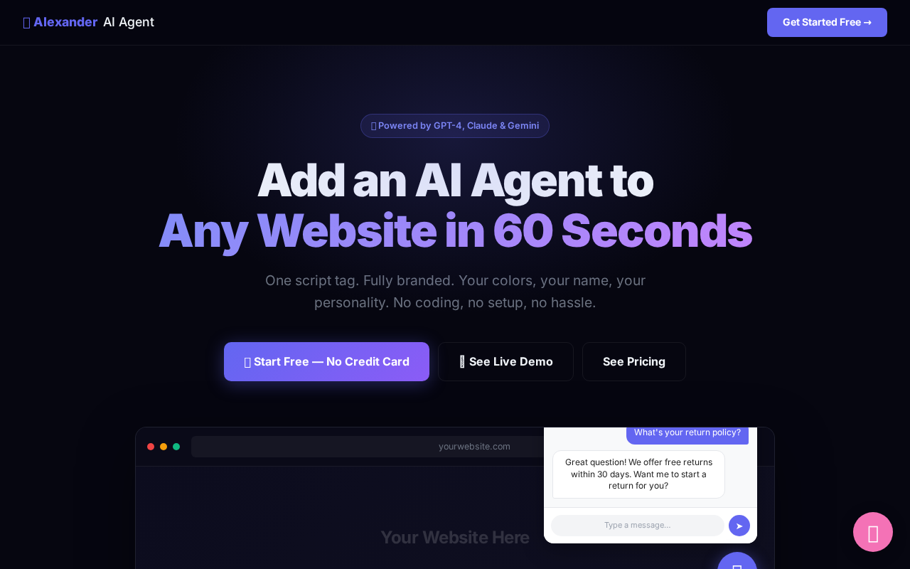
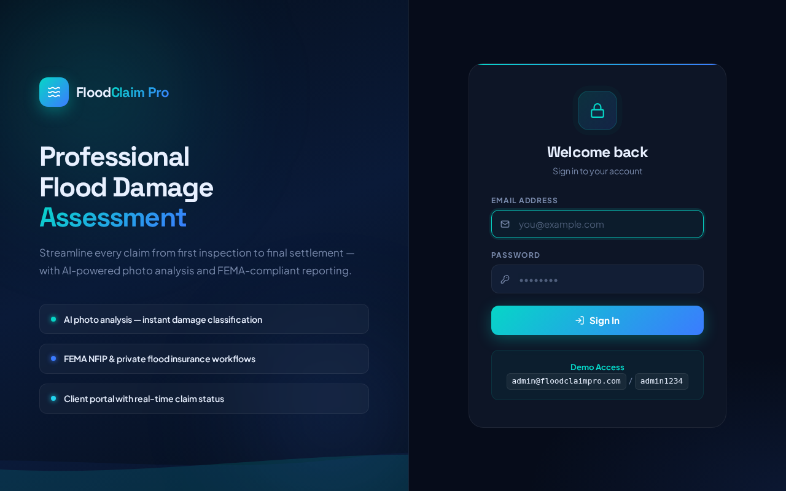
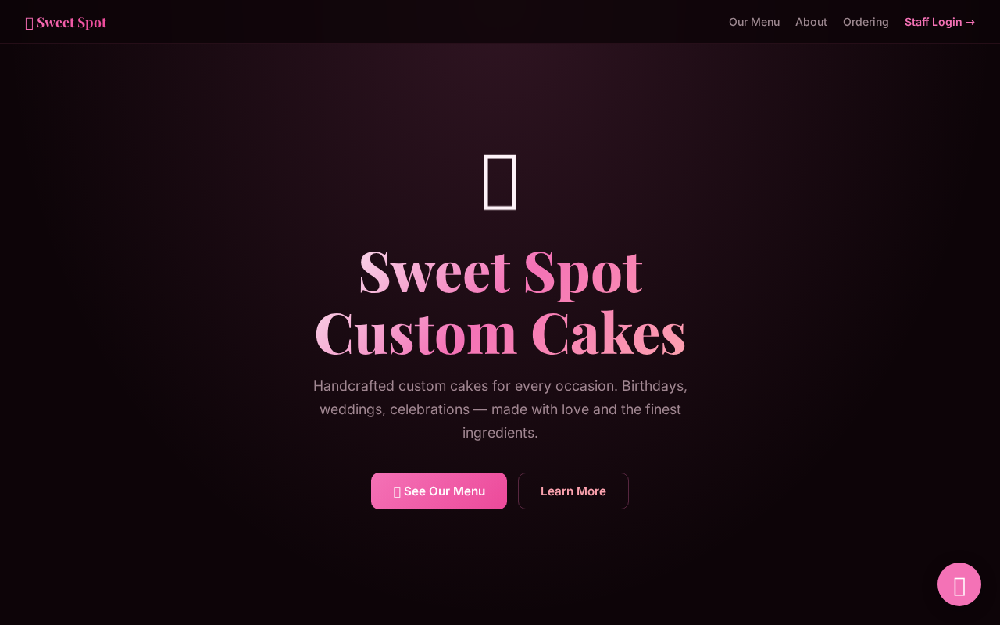
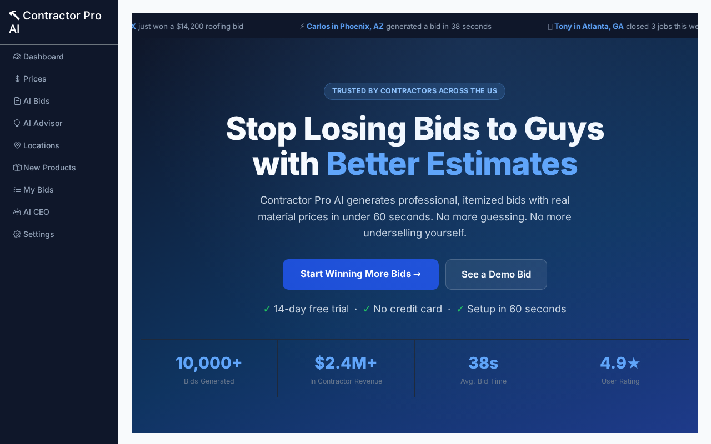
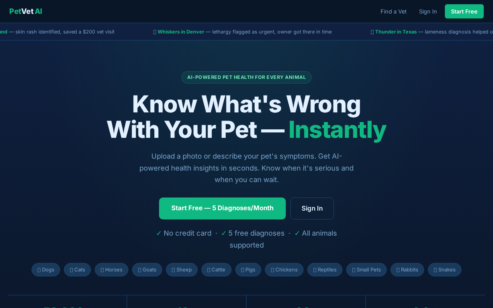
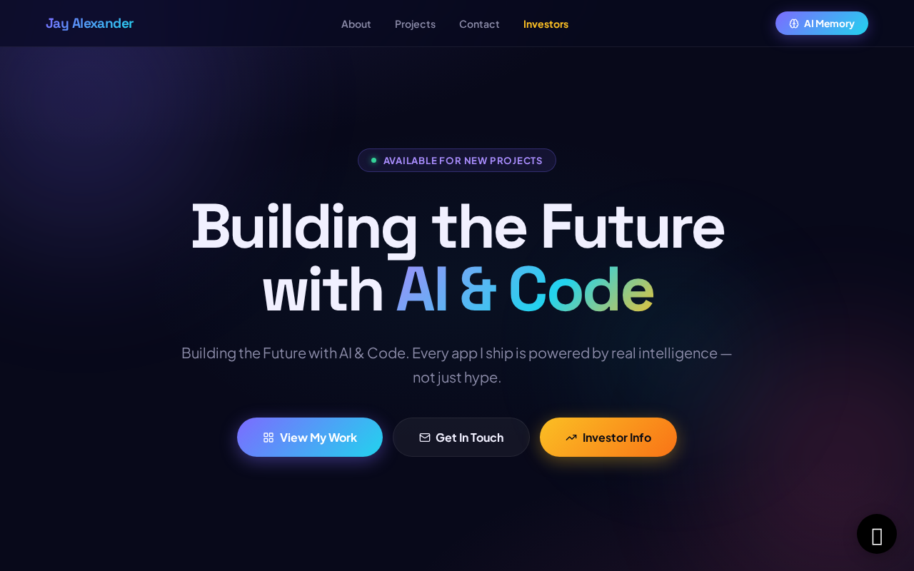

Why your business needs one — and what's actually possible right now
Follow each step exactly as shown. Every screenshot is taken from the real app you'll be using. By the end of this lesson, you'll have completed the action shown in the title above.
This is the Alexander AI Agent Widget — a platform Jay built to deploy AI agents to any website. We're looking at a live agent platform before we build one.

Jay Alexander built this entire platform himself using AI. No developer hired. No agency. This is what you'll be able to do by the end of this course.
FloodClaim Pro helps homeowners file insurance claims after flooding. Built with AI.

This app is live right now. It has a database, a login system, a dashboard, and a workflow. A business owner built this with AI. You'll learn exactly how.
A custom cake ordering app for a small bakery.

Sweet Spot Custom Cakes lets customers order custom cakes, track their order, and get notified when it's ready. This is what YOUR business could have — not generic software, something built exactly for you.
Built for contractors and service businesses.

Contractor Pro AI helps contractors manage jobs, generate quotes, and communicate with clients. Every app you've seen was built by one person using AI tools — your instructor. You're next.
An AI-powered vet finder for pet owners.

Pet Vet AI uses your location to find nearby veterinarians and lets AI help you assess your pet's symptoms. Built with AI, deployed on Railway. Notice the polished design — this is what AI-assisted development looks like in 2025.
The dashboard that connects all of Jay's apps.

This is what the end of the journey looks like. Fourteen live apps, all connected, all monitored, all built using AI. By the end of this course you'll have your first one. Let's get started.